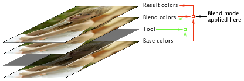

Modos de mezcla
La mayor parte de las herramientas pueden tener unmodo de mezcla especifico para ellas. Un modo de mezcla controla como los efectos de las herramientas en la pila de herramientas se mezclan juntos para formar la foto final. Para entender los modos de mezcla, hay algunos terminos a conocer:
- Color base
- Este es el color de un pixel antes de que una herramienta de efectos se haya aplicado a la foto.
- Color mezclado
- Este es el color de un pixel despues de que una herramineta de efectos se haya aplicado a la foto.
- Color resultante
- Este es el color de un píxel después de que su base y los colores de la mezcla se hayan mezclado juntos usando un modo de fusión.
Esto se muestra en la figura de abajo. En primer lugar, como se muestra en las flechas verdes, los colores de base de una foto tienen un efecto de una herramienta aplicado a ellos produciendo los colores de mezcla. En segundo lugar, como se muestra en las flechas rojas, los colores de base y de mezcla se mezclan juntos usando un modo de mezcla que produce los colores resultantes.

Hay muchos modos de mezcla para escoger. Aunque las descripciones para cada uno estan debajo, es mejor experimentar.
- Normal
- Este modo de mezcla no tiene efecto; por lo tanto la mezcla y los colores resultantes son los mismos.
- Promedio
- Este es el mismo que el modo de mezcla Normal pero al 50% de opacidad.
- Subexponer color
- Oscurece el color base para reflejar el color de la mezcla aumentando el contraste. (Opuesto a sobreexponer color. Ver tambien: Subexponer suave.)
- Sobreexponer color
- Aclarar el color base para reflejar el color de la mezcla disminuyendo el contraste. (Opuesto a Subexponer Color.)
- Oscurecer
- El color resultante es el color base o de mezcla, el que sea más oscuro. (Opuesto a Aclarar.)
- Diferencia
- Resta el color de la mezcla del color base o el color base del color de la mezcla dependiendo de cuál sea más claro. (Ver también: Exclusion.)
- Exclusión
- Crea un efecto similar, pero más bajo en contraste que, el modo de mezcla de Diferencia. (Ver también: Negación.)
- Luz fuerte
- Este modo de fusión multiplica o mide los colores, dependiendo del color de la mezcla. Si el color de la mezcla es más claro que el 50% de gris, el color es aclarado (tramado); Si el color de la mezcla es más oscuro que el 50% de gris, el color se oscurece (multiplicado). Esto es útil para agregar altas luces o sombras a una imagen.
- Aclarar
- El color resultante es el color base o de mezcla, el que sea más claro. (Opuesto a Oscurecer.)
- Medios tonos
- Este modo de fusión es el mismo que el modo de fusión Normal excepto que el efecto se aplica sólo a los medios tonos.
- Med+Altas Luces
- Este modo de fusión es el mismo que el modo de fusión Normal excepto que el efecto se aplica sólo a los medios tonos y altas luces.
- Multiplicar
- Este modo de mezcla multiplica la base y los colores de la mezcla. El color resultante es siempre mas oscuro. El efecto es similar a dibujar en la imagen con múltiples rotuladores. (ver también: Trama.)
- Negacion
- Este modo de fusión es similar al modo de fusión Exclusión excepto que muestra colores más claros y vibrantes.
- Superponer
- Multiplica o trama los colores según el color base. Los patrones o los colores superponen los píxeles existentes mientras se conservan los reflejos y las sombras del color base. El color base no se sustituye, sino que se mezcla con el color de la mezcla para reflejar la luminosidad u oscuridad relativa del color original.
- Trama
- Este modo de fusión es similar al modo de fusión Multiplicar, excepto que multiplica la inversa de los colores de mezcla y base. El color resultante es siempre mas claro. El efecto es similar a proyectar múltiples diapositivas fotográficas en la misma pantalla.
- Sombras
- Este modo de fusión sólo hace que las sombras se vean afectadas.
- Subexposición suave
- Este modo de fusión es similar al modo de fusión Subexponer Color, excepto que el efecto produce menos saturación y contraste.
- Sobreexposición suave
- Este modo de mezcla es una combinación de los modos Sobreexponer Color y Color inverso, pero mucho más suave que cualquiera de ellos. Los colores de base se oscurecen ligeramente con colores de mezcla muy claros sobreexpuestos.
- Luz suave
- Este modo de mezcla oscurece o aclara los colores dependiendo del color de la mezcla. El efecto es similar a aclarar con un foco difuso en la imagen. Si el color de la mezcla es más claro, la imagen se aclara como si fuera sobreexpuesta; Si el color de la mezcla es más oscuro, la imagen se oscurece como si estuviera subexpuesta.